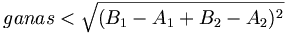

De: La Frikipedia, la enciclopedia extremadamente seria.
De: La Frikipedia, la enciclopedia extremadamente seria. De: La Frikipedia, la enciclopedia extremadamente seria.
Lugar alejado donde normalmente comandamos a otra persona a ir, la cual no tiene ninguna gana de visitar.
La primera vez que se utilizo este complicado algoritmo matematico fue en leganes. En el año 2006 y 3/4 una jessi, cansada de que un cani pesado se la intentase follar, le mando al cuerno. Un profesor de matematicas que pasaba por ahi al oirlo, decidio desarrollar la ecuacion (y cambio el origen, ya que nadie se cree que una de esas abominaciones sea capaz de repetir mas de 9 numeros seguidos que no sean los de un telefono movil). Posteriormente lo enseño a la comunidad cientifica, pero estos se mofaron y le escupieron, como le hacian sus compañeros de clase, a lo que este respondio ¡¡YA PODEIS COMERME TODOS LA POLLA!! ¡¡ VAYANSE USTEDES AL CUERNO!!
El cuerno ha sido usado como expresión desde toda la vida. Probablemente tu no lo hayas oido ya que solo se cita en conversaciones entre personas mayores de 50 (si tienes esa edad pulsa Alt+F4).
En muchas ocasiones el susodicho lugar ha sido causa de batallas como Trafalgar y "La batalla de las Navas de Tolosa". Posteriormente se decidió que este emplazamiento no pertene a ninguna nación, si no que es de uso y disfrute público.
Teniéndose un punto A, en el cual están las dos personas, el cuerno es un lugar B cuyo módulo del vector que los separa es mayor que una propiedad del sujeto que comandamos llamada ganas, expresado en metros.
Para un espacio de dos dimensiones, se establece la inecuación:

Geométricamente, se trata del lugar geométrico del punto planar donde se sitúa dicho objeto. Lo cual no es decir mucho, por que ya de antemano sabíamos que estaba ahí.
Si se da alguna de estas situaciones es probable que te mande al cuerno:
| |
|
Álgebra y Aritmética
Estadística
|
Autor(es):